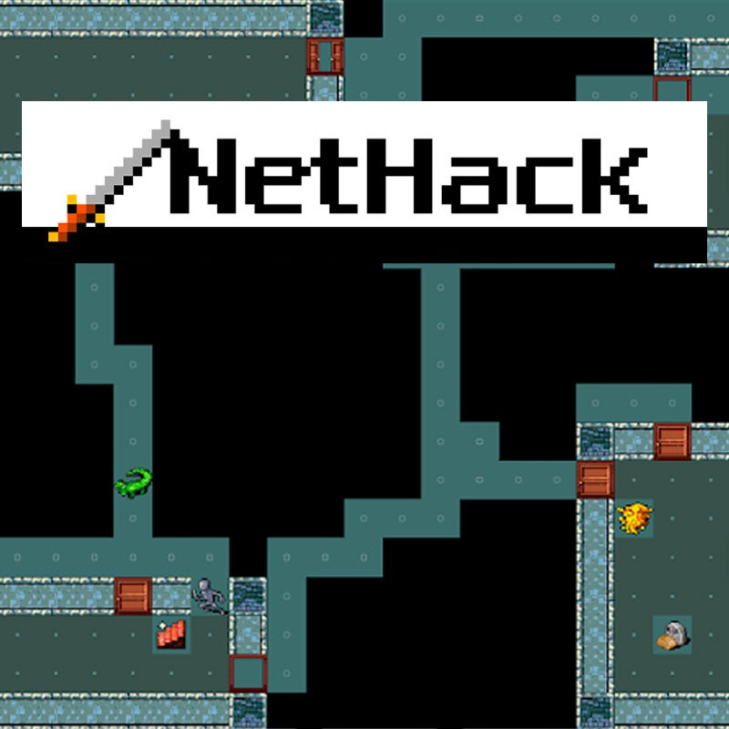
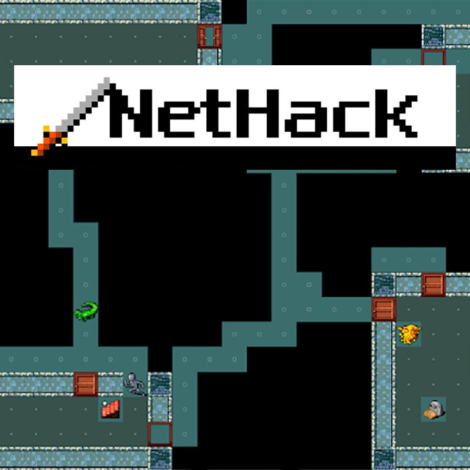

What is Rogue and Rogue-like?
Rogue is a classic dungeon-crawling game first released in 1980. It features procedurally generated levels, turn-based gameplay, and permadeath, meaning that when the player's character dies, they must start over from the beginning. The game has inspired numerous other games with similar gameplay and mechanics, which are often referred to as "roguelike" games.
A roguelike game is a genre of video game that is characterized by procedurally generated levels, turn-based gameplay, and permadeath. These games often feature complex gameplay systems, including randomly generated items and enemies, as well as a focus on tactical combat and exploration.

 

Origin of Rogue-like
The history of roguelike games can be traced back to the classic game Rogue, which was first released in 1980. Rogue was a dungeon-crawling game that featured procedurally generated levels, turn-based gameplay, and permadeath, and it quickly became popular among computer enthusiasts and gamers.
Over the years, Rogue inspired numerous other games with similar gameplay and mechanics, which became known as "roguelike" games. These games often featured complex gameplay systems and a focus on tactical combat and exploration.
One of the most influential roguelike games was Nethack, which was first released in 1987. Nethack expanded on the gameplay mechanics of Rogue, adding new features like skill trees and a variety of different character classes. In the 1990s, roguelike games continued to evolve, with titles like Angband, ADOM, and Ancient Domains of Mystery introducing new gameplay elements and features. These games helped to establish many of the conventions that are now considered hallmarks of the roguelike genre, including procedurally generated levels, permadeath, and deep character customization options.
Characteristics of Rogue-like
Procedurally generated levels
Roguelikes use algorithms to randomly generate levels, making each playthrough unique.
Turn-based gameplay
Roguelikes feature gameplay that takes place in turns, with the player and enemies taking actions in sequence.
Permadeath
In roguelikes, when the player's character dies, they must start over from the beginning, giving the game a high level of difficulty.
Randomized loot and enemies
Roguelikes feature randomized items and enemies, adding an element of unpredictability and replayability.
Tactical combat
Roguelikes often feature deep and complex combat systems, requiring careful planning and strategy to defeat enemies.
Exploration
Roguelikes encourage exploration and discovery, with hidden areas and secrets to uncover.